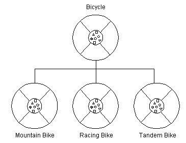

Feedback Form
|
|
Start of Tutorial > Start of Trail > Start of Lesson |
Search
Feedback Form |
Generally speaking, objects are defined in terms of classes. You know a lot about an object by knowing its class. Even if you don't know what a penny-farthing is, if I told you it was a bicycle, you would know that it had two wheels, handle bars, and pedals.Object-oriented systems take this a step further and allow classes to be defined in terms of other classes. For example, mountain bikes, racing bikes, and tandems are all kinds of bicycles. In object-oriented terminology, mountain bikes, racing bikes, and tandems are all subclasses
of the bicycle class. Similarly, the bicycle class is the superclass
 Each subclass inheritsHowever, subclasses are not limited to the state and behaviors provided to them by their superclass. Subclasses can add variables and methods to the ones they inherit from the superclass. Tandem bicycles have two seats and two sets of handle bars; some mountain bikes have an extra set of gears with a lower gear ratio.
Subclasses can also override
You are not limited to just one layer of inheritance. The inheritance tree, or class hierarchy
The
Objectclass is at the top of class hierarchy, and each class is its descendant (directly or indirectly). A variable of typeObjectcan hold a reference to any object, such as an instance of a class or an array.Objectprovides behaviors that are required of all objects running in the Java Virtual Machine. For example, all classes inheritObject'stoStringmethod, which returns a string representation of the object.Inheritance offers the following benefits:
- Subclasses provide specialized behaviors from the basis of common elements provided by the superclass. Through the use of inheritance, programmers can reuse the code in the superclass many times.
- Programmers can implement superclasses called abstract classes
|
|
Start of Tutorial > Start of Trail > Start of Lesson |
Search
Feedback Form |